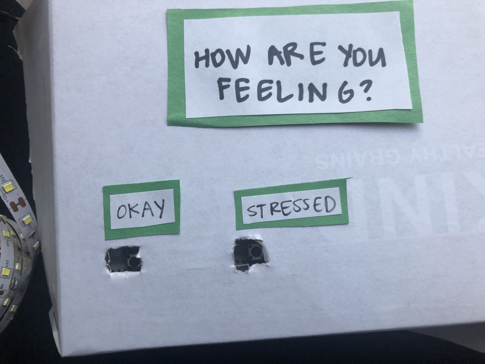

Final Project: De-stress Light
Sahana Vishwanath
This page shows all the documentation for my final project, a de-stress light.

The following picture shows the final version of this project:

This picture shows a box asking the user how they feel, the user can press the 'Okay' button or the 'Stressed' button. If the 'Okay' button is pressed, the lights begin to continuously fade on and off, fading on for 4 seconds, and off for 4 seconds. If the 'Stressed' button is pressed, the lights begin to fade on and off, at first fading on for 2 seconds, and off for 2 seconds, and gradually slowing down until the lights fade on for 4 seconds, and fade off for 4 seconds.
The following picture shows the schematic for this project:

Th schematic shows two
The following picture shows the circuit for this project:

The following code shows the firmware for this project:
// the PWM pin the LED strip is attached to
int led = 9;
// how bright the LED is
int brightness = 0;
// sets the number of pushbutton 1 pin
const int button1Pin = 2;
// sets variable for reading pushbutton 1 status
int button1State = 0;
// sets the number of pushbutton 2 pin
const int button2Pin = 3;
// sets variable for reading pushbutton 2 status
int button2State = 0;
void setup() {
// declare pin 9 to be an output:
pinMode(led, OUTPUT);
// initializes pushbutton 1 pin as an input
pinMode(button1Pin, INPUT);
// initializes pushbutton 2 pin as an input
pinMode(button2Pin, INPUT);
}
// function to continuously loop the LED light fading on and off at a particular fadeAmount
// takes in an integer fadeAmount which indicates how much the brightness should change during each
// step off the fading on/off
void loopFading(int fadeAmount) {
while(fadeAmount) {
// sets brightness of led
analogWrite(led, brightness);
// change the brightness for next time through the loop
brightness = brightness + fadeAmount;
// reverse the direction of the fading at the ends of the fade
if (brightness <= 0 || brightness >= 255) {
fadeAmount = -fadeAmount;
}
// wait for 90 milliseconds to see the dimming effect
delay(90);
}
}
// function to loop the LED light fading on and off once at a particular fadeAmount
// takes in an integer fadeAmount which indicates how much the brightness should change during each
// step off the fading on/off
void fadeOnce(int fadeAmount) {
// sets brightness of led
analogWrite(led, brightness);
// fades led light on
for(brightness = 0; brightness <= 255; brightness = brightness + fadeAmount) {
analogWrite(led, brightness);
// wait for 90 milliseconds to see the dimming effect
delay(90);
}
// fades led light off
for(brightness = brightness; brightness >= 0; brightness = brightness - fadeAmount) {
analogWrite(led, brightness);
// wait for 90 milliseconds to see the dimming effect
delay(90);
}
}
// the loop routine runs over and over again forever
void loop() {
// reads the states of pushbuttons 1 and 2 values
button1State = digitalRead(button1Pin);
button2State = digitalRead(button2Pin);
// checks if pushbutton 1 is pressed
if (button1State == HIGH) {
// calls continuous fading loop function and sets fadeAmount to 5
loopFading(5);
}
// checks if pushbutton 2 is pressed
else if (button2State == HIGH) {
// sets fadeAmount to 15
int fadeAmount = 15;
// for loop to call fadeOnce function and decrease the fadeAmount by 1 each time - incrementally
// making fade cycle slower
for(fadeAmount = fadeAmount; fadeAmount > 5; fadeAmount --) {
// calls fadeOnce function and sets fadeAmount to decreasing value set in for loop
fadeOnce(fadeAmount);
}
}
// if neither button is pressed the following code runs
else {
// turns LED light off
digitalWrite(led, LOW);
// sets brightness to 0
brightness = 0;
}
}
The comments in the above code describe each line of in the above code in detail. The code initializes various variables as well as sets certain output and input pins. The code then makes two functions to fade the LED lights on and off a various number of times. Following this, the code calls these functions when certain buttons are pressed.
The following video shows the operation of the circuit for this project:

The video above shows how the circuit operates.